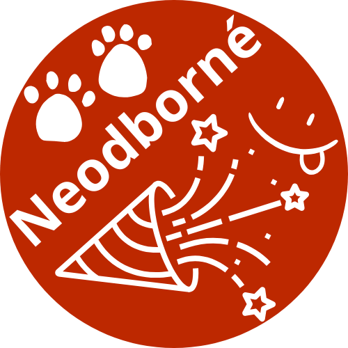
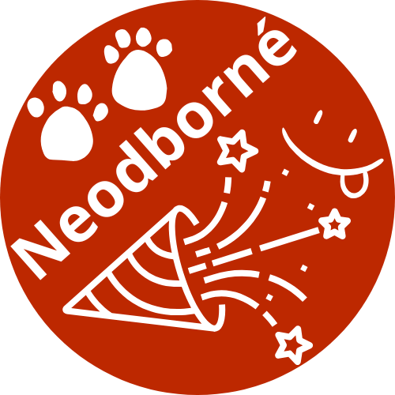

DOMŮ
ČTIVO
HRY
VIDEA
DOMŮ
ČTIVO
HRY
VIDEA
 



DEN S AFRIKOU
Mnozí z vás už pravděpodobně zapomněli, že byl nějaký den s Afrikou. Tak si ho pojďme připomenout. V sedmé třídě jste si mohli zkusit mnoho kvízů a získat sladké odměny. A určitě...
D&D - Dungeons & Dragons
Úvod
Dungeons and Dragons, zkráceně D&D, je na představivosti založená desková hra vedená vypravěčem, DMem, který provádí hráče hrou a hraje za postavy, které nejsou hráči (NPC). Hra probíhá tak, že...
Napište nám své čtivo
VÍTE, ŽE V ČESKU JE O 215 TISÍC ŽEN VÍCE NEŽLI MUŽŮ?
V Česku je 5 557 945 žen a 5 342 610 mužů. Za těmito čísly můžeme hledat různé vlivy, ale určitě na tom činí velký podíl fakt, že ženy se...
TÝDEN PRO NADANÉ DĚTI UJEP
Hurá na přírodovědu
ROZHOVOR S ZAKLADATELKOU PROGRAMU
Proč jste začala dělat tyto akce?
Tyto aktivity jsem začala dělat již před dvaceti lety a mou motivací je to, že se tyto nadané děti se ve svém přirozeném kolektivu necítí dobře. Jedna holka mi říkala, že nemá s kým chodit do lesa, a že všichni chtějí chodit jen do hospody. Dělám to také proto, aby viděly vybavení UJEPu.
Vánoční sněhulák
Z rána děti na stráň přišly
sněhuláka postavit,
první koule, druhá koule
třetí...
Vesta (báseň)
Zledovělé chodníky
zdobí ozdobné knoflíky
jež popadaly z vesty
když někdo u té cesty
popukal zlostí
pak plný byl lítosti
ne nad těmi knoflíky,
ale nad jeho penězi
jež propadly v tu vestu
která teď zdobila cestu.
Vznik not
Dnes je již možné zapisovat hudbu a děláme to pomocí not, ale jak si lidé zapisovali hudbu v minulosti, když noty neexistovaly? Nemohli si zapsat melodie. Za první zaznamenanou píseň...
Ženský basketball
Nullam sit amet magna in magna gravida vehicula. Nullam lectus justo, vulputate eget mollis sed, tempor sed magna. Etiam bibendum elit eget erat. Excepteur sint occaecat cupidatat non proident, sunt...
Domácí mazlíčci
Co přináší, co naopak berou, a hlavně co tohle všechno obnáší. Tyto tři otázky by si měl zodpovědět každý, kdo by chtěl, nebo dokonce uvažuje o domácím mazlíčkovi. No, tak...
Jaké jídlo by si učitelé a asistenti vybrali?
Matěj se rozhodl, že provede statistiku (průzkum), co by si učitelé a asistenti vybrali z těchto jídel: burger, sushi, steak, moučník, pizza, špagety, buchtičky se šodó, či bruschette. Nakonec nejvíce učitelů a asistentů volilo sushi, přesněji 9 pracovníků z 27 dotazovaných.
Nejméně žádaná jídla byla: pizza, špagety, buchtičky se šodó a bruschette. U těchto jmenovaných jídel bylo vždy jen po jednom hlasu. Ovšem moučník také nebyl příliš žádaný, zvolili si ho jen 2 pracovníci.
Naopak mezi nejžádanější jídla patří: sushi, steak a burger. Jak bylo již zmíněno u sushi, vybralo si ho nejvíce lidí. Steak si vybralo 7 lidí a burger 5 lidí.
Ve statistice chybí jeden učitel a jeden asistent.
Ukázat graf:

Jak vznikla Molekula?
PROČ JSI CHTĚLA ZALOŽIT ŠKOLU? JAK TĚ TO NAPADLO?
Pracovala jsem na klasické statní škole, a přišlo mi, že by se děti mohly učit trošku efektivněji a zajímavěji. Bohužel se mi nepodařilo pro to nadchnout moje kolegyně, které upřednostňovaly...
Kde se berou peníze?
Dost lidí si někdy řeklo, kde se berou peníze? Na začátku se vyměňovala věc za věc, poté se přešlo na jednotný materiál např. zlato nebo mušle, poté se ustanovilo platidlo...
Jak funguje půjčka a co jsou úroky?
Půjčka, správně označováno jako úvěr, se může stát výborným způsobem, jak získat velký obnos peněz. Ovšem i výborným způsobem, jak se zadlužit do konce života a stát se bezdomovcem bez...